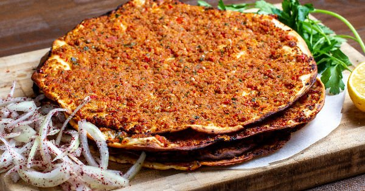

Lahmacun

Lahmacun has two different components. The dough and the meat topping.
1- The dough. I hope my Turkish friends will forgive me, I took a major shortcut with the dough here using quality store-bought pizza dough. It works very well. But if you want, you can certainly make a homemade pizza dough from scratch.
Whether you use store-bought dough or make your own, the important thing to remember is that you need to spread the dough well to achieve a very thin flatbread that crisps around the edges when baked.
2- The meat topping. Traditionally, Turkish lahmacun is made with minced lamb, but you can also use lean ground beef. What makes the topping special is the combination of flavors.
In this lahmacun recipe, I use a food processor to create the topping. Ground lamb (or beef), mixed with sweet red peppers, shallots, garlic, tomato paste, fresh herbs, and an epic fusion of spices!
To make lahmacun, the idea is to spread the spiced meat topping very thinly across the dough. You can bake the lahmacun briefly until the topping is well cooked through and the dough turns nice and crispy around the edges. Or, if you don't feel like warming up the oven, you can try the stovetop method using a large non-stick skillet (see recipe notes below).
Total Time
25 Minutes
Ingredients
Serves to 4 to 8 people
Dough
- Half lb uncooked store-bought organic pizza dough
Topping
- Half a sweet red pepper, cored, cut into chunks
- 1 shallot, halved
- 2 garlic cloves, peeled
- Half oz fresh parsley leaves with some stem
- 7 oz ground lamb or ground beef
- 1 tsp smoked paprika
- 1 tsp ground allspice
- Half tsp ground cumin
- Half tsp Aleppo-style pepper
- Half tsp ground cinnamon
- Half tsp cayenne pepper
- Half tsp salt
- 4 tbsp tomato paste
- 2 tbsp extra virgin olive oil
- Lemon wedges for later
Instructions
- Prepare your cooking environment.
- Heat oven to 450 degrees F. Adjust oven rack to the middle.
- You will need a large non-stick skillet with a lid. Pre-heat skillet over medium heat and add just a little bit of extra virgin olive oil. Place one Lahamacun in heated skillet and cover with lid. Cook for about 5 minutes until the meat and dough are cooked through.
- Prepare the meat mixture. In the large bowl of a food processor, fitted with blade, add red peppers, shallot, garlic, and parsley. Pulse a few times to chop. To the mixture, add ground lamb (or beef). Season with spices and salt. Add tomato paste and extra virgin olive oil. Now pulse again until well-combined (about 8 to 10 pulses.)
- Prepare two large rimmed baking sheets lined with parchment paper (you'll be using these to bake the Lahmacun in batches.)
- Divide the pizza dough into 4 equal balls (about 2 oz each.) Working with one ball of dough at a time, place on a floured surface. Using a rolling pin, roll dough out into as thin as you can to a disk that's about 8 or 9 inches in diameter.
- Assemble Lahmacun. Place one flatbread disk on one of the prepared pans. Reshape as needed. Spoon 3–4 tablespoon topping onto dough and spread topping evenly to edges, leaving a thin boarder.
- Bake in heated oven for about 5 to 7 minutes or until dough and meat are fully cooked (dough will be a little crusty around the edges.)
- Repeat steps 5 and 6 with the remaining dough.
- Squeeze a little lemon juice on top. Serve Lahmacun hot or at room temperature. See notes below for how to serve.
Home